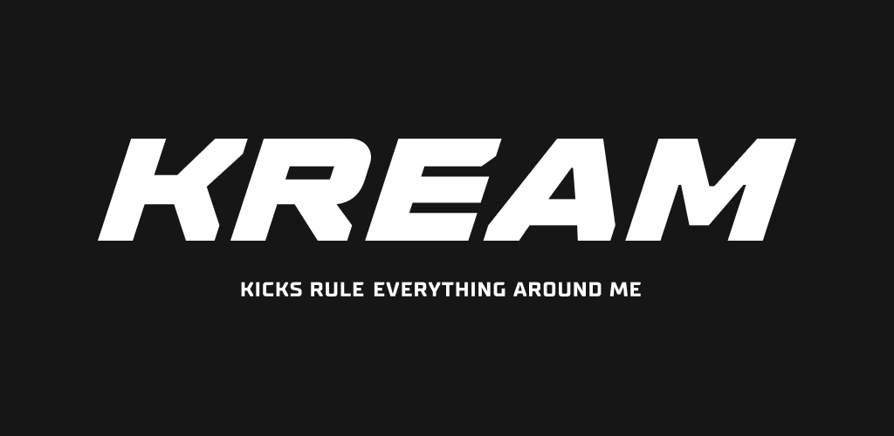

크림 KREAM
검수 기반 한정판 리셀 거래 플랫폼
최종 업데이트

크림은 어떤 브랜드인가
네이버의 자회사 스노우 산하에서 2020년 한정판 스니커즈 리셀 서비스로 출발했다. 정가품 논란이 잦았던 리셀 시장에서 자체 검수 프로세스를 도입해 거래 신뢰를 확보하는 것을 핵심 경쟁력으로 삼았다.
이후 스니커즈를 넘어 의류, 시계, 명품 등으로 거래 카테고리를 확장했다.
크림의 브랜드 아이덴티티는 무엇인가
MZ세대의 리셀 문화 확산과 정가품 검증에 대한 니즈를 결합해 신뢰 기반 거래 플랫폼으로 자리잡았다. 검수 인프라 투자와 카테고리 확장을 병행하며 무신사 솔드아웃과의 경쟁 속에서 거래 규모를 키웠다.
크림 연혁 — 주요 사건은 언제였나
크림 로고는 어떻게 변해왔나
자주 묻는 질문
크림의 브랜드 아이덴티티는 무엇인가요?
MZ세대의 리셀 문화 확산과 정가품 검증에 대한 니즈를 결합해 신뢰 기반 거래 플랫폼으로 자리잡았다.
출처와 검증
브랜드명은 한글과 원어를 함께 표기하되 데이터에 없는 표기는 만들지 않습니다. 기원 국가·설립연도는 검수된 정의문에서 확인된 값을 우선하고, 없을 때만 공식 웹사이트 URL이 일치하는 위키데이터 개체의 값을 씁니다.